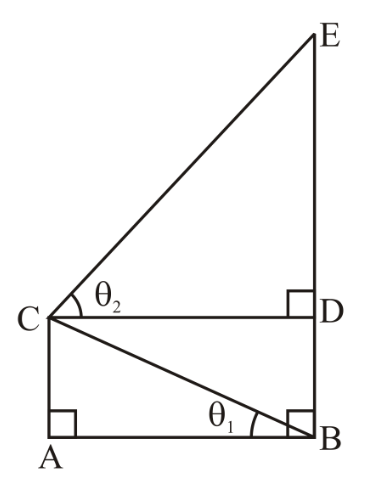

∑ Sequences & Series
109
Total Questions
5
Years
2
Clusters
Question Clusters
MATH-SEQUSERI-AP_PROPERTIES
Sequences & Series: Arithmetic Progression (AP)
MATH-SEQUSERI-GP_PROPERTIES
Sequences & Series: Geometric Progression (GP) & Infinite Series
Year-wise Frequency
| Year | Questions | Frequency |
|---|---|---|
| 2021 | 28 | |
| 2022 | 9 | |
| 2023 | 30 | |
| 2024 | 27 | |
| 2025 | 15 |
Questions
Showing first 50 of 109 questions.
Q64 (2021 Shift 2)
Let be an such that 20 1 4 If the sum of this is then 𝑎1, 𝑎2, … , 𝑎21 𝐴. 𝑃. ∑𝑛= 1 𝑎𝑛𝑎𝑛+ = 9 . 𝐴. 𝑃. 189, a6a16 is equal to : 1
MATH-2021-0101-S2-Q064
Q82 (2021 Shift 2)
All the arrangements, with or without meaning, of the word FARMER are written excluding any word that has two 𝑅 appearing together. The arrangements are listed serially in the alphabetic order as in the English dictionary. Then the serial number of the word FARMER in this list is _____ .

Answer:
77MATH-2021-0101-S2-Q082
Q85 (2021 Shift 1)
⎡ ⎤ 2 7 Let P = 90 140 112 and A = −1 −ω 1 where ω = −1+i√3 , and I3 be the identity matrix ⎣ ⎦ ⎣ ⎦ 2 120 60 14 0 −ω −ω + 1 of order 3 . If the determinant of the matrix (P −1AP −I3)2 is αω2 , then the value of α is equal to _________.
Answer:
36MATH-2021-0101-S1-Q085
Q81 (2021 Shift 2)
Let 1 , a and b be in G.P. and 1 , 1 , 6 be in A.P., where a, b > 0 . Then 72(a + b) is equal to _______ . 16 a b
Answer:
14MATH-2021-0101-S2-Q081
Q86 (2021 Shift 1)
The mean age of 25 teachers in a school is 40 years. A teacher retires at the age of 60 years and a new teacher is appointed in his place. If the mean age of the teachers in this school now is 39 years, then the age (in years) of the newly appointed teacher is 5x8+7x6 1
Answer:
35MATH-2021-0101-S1-Q086
Q62 (2021 Shift 2)
Let S1 be the sum of first 2n terms of an arithmetic progression. Let S2 be the sum of first 4n terms of the same arithmetic progression. If (S2 −S1) is 1000 , then the sum of the first 6n terms of the arithmetic progression is equal to:
MATH-2021-0101-S2-Q062
Q86 (2021 Shift 1)
x + a −c x + b x + a Let a, b, c, d be in arithmetic progression with common difference λ . If x −1 x + c x + b = 2 , then −b + + + x d x d x c value of λ2 is equal to________.
Answer:
1MATH-2021-0101-S1-Q086
Q62 (2021 Shift 1)
Let Sn denote the sum of first n -terms of an arithmetic progression. If S10 = 530, S5 = 140, then S20 −S6 is equal to:
MATH-2021-0101-S1-Q062
Q68 (2021 Shift 1)
Two vertical poles are 150 m apart and the height of one is three times that of the other. If from the middle point of the line joining their feet, an observer finds the angles of elevation of their tops to be complementary, then the height of the shorter pole (in meters) is:
MATH-2021-0101-S1-Q068
Q62 (2021 Shift 2)
If n ⩾2 is a positive integer, then the sum of the series + 2(2C2 + 3C2 + 4C2 + … + nC2) is
MATH-2021-0101-S2-Q062
Q84 (2021 Shift 2)
The sum of first four terms of a geometric progression (G. P. ) is 65 and the sum of their respective reciprocals 65 12 is 18 . If the product of first three terms of the G. P. is 1, and the third term is α, then 2α is _________.
Answer:
3MATH-2021-0101-S2-Q084
Q67 (2021 Shift 2)
The contrapositive of the statement "If you will work, you will earn money" is:
MATH-2021-0101-S2-Q067
Q72 (2021 Shift 2)
A function f(x) is given by f(x) = 5x+5 , then the sum of the series f( 1 ) + f( 2 ) + f( 3 ) + … + f( 39 ) 20 20 20 20 is equal to:
MATH-2021-0101-S2-Q072
Q76 (2021 Shift 2)
If In = ∫ π 2 cotn xdx , then π 4
MATH-2021-0101-S2-Q076
Q61 (2021 Shift 1)
Let 𝑆𝑛 be the sum of the first 𝑛 terms of an arithmetic progression. If 𝑆3𝑛= 3𝑆2𝑛, then the value of 𝑆4𝑛 is : 𝑆2𝑛
MATH-2021-0101-S1-Q061
Q62 (2021 Shift 1)
The sum of the series x+1 1 + x2+1 2 + x4+1 22 + … + x2100+1 2100 when x = 2 is: 2101 2101
MATH-2021-0101-S1-Q062
Q63 (2021 Shift 1)
If the sum of an infinite GP , a, ar, ar2, ar3, … is 15 and the sum of the squares of its each term is 150, then the sum of ar2, ar4, ar6, … is: 25 9
MATH-2021-0101-S1-Q063
Q78 (2021 Shift 2)
A hall has a square floor of dimension 10 m × 10 m (see the figure) and vertical walls. If the angle GPH between the diagonals and is cos−1 1 , then the height of the hall (in meters) is: AG BH 5
MATH-2021-0101-S2-Q078
Q84 (2021 Shift 2)
Let a1, a2, … , be an A. P. with common difference −3 and b1, b2, … , be a G. P. with common ratio a10 b10 2. Let ck = ak + bk, k = 1, 2, … , 10. If c2 = 12 and c3 = 13, then ∑10 ck is equal to ______. k=1 ⎧ ( n ),
Answer:
2021MATH-2021-0101-S2-Q084
Q62 (2021 Shift 2)
The sum of the series ∑∞ n2+6n+10 is equal to n=1 (2n+1)!
MATH-2021-0101-S2-Q062
Q84 (2021 Shift 2)
If the arithmetic mean and the geometric mean of the pth and qth terms of the sequence −16, 8, −4, 2, … satisfy the equation 4x2 −9x + 5 = 0 , then p + q is equal to _______.
Answer:
10MATH-2021-0101-S2-Q084
Q72 (2021 Shift 2)
A box open from top is made from a rectangular sheet of dimension a × b by cutting squares each of side x from each of the four corners and folding up the flaps. If the volume of the box is maximum, then x is equal to: a+b+√a2+b2−ab a+b−√a2+b2−ab
MATH-2021-0101-S2-Q072
Q81 (2021 Shift 1)
If log3 2, log3(2x −5), log3(2x −7 ) are in an arithmetic progression, then the value of x is equal to _____. 2
Answer:
3MATH-2021-0101-S1-Q081
Q63 (2021 Shift 2)
If tan( π ), x, tan( 7π ) are in arithmetic progression and tan( π ), y, tan( 5π ) are also in arithmetic 9 18 9 18 progression, then |x −2y| is equal to :
MATH-2021-0101-S2-Q063
Q80 (2021 Shift 2)
A student appeared in an examination consisting of 8 true-false type questions. The student guesses the answers with equal probability. The smallest value of n, so that the probability of guessing at least n correct answers is less than 1 , is : 2
MATH-2021-0101-S2-Q080
Q62 (2021 Shift 1)
Three numbers are in an increasing geometric progression with common ratio r. If the middle number is doubled, then the new numbers are in an arithmetic progression with common difference d. If the fourth term of GP is 3r2, then r2 is equal to : −d
MATH-2021-0101-S1-Q062
Q64 (2021 Shift 2)
Let 𝑎1, 𝑎2, 𝑎3, … be an A.P. If 𝑎𝑝= , 𝑝≠10, then is equal to : 𝑎1 + 𝑎2 + … + 𝑝2 𝑎10
MATH-2021-0101-S2-Q064
Q84 (2021 Shift 2)
Let 𝐵 be the centre of the circle 𝑥2 + 𝑦2 - 2𝑥+ 4𝑦+ 1 = 0 . Let the tangents at two points 𝑃 and 𝑄 on the circle intersect at the point 𝐴( 3, 1 ) . Then 8 area 𝛥APQ is equal to . area 𝛥BPQ
Answer:
18MATH-2021-0101-S2-Q084
Q63 (2022 Shift 1)
If {ai}n , where n is an even integer, is an arithmetic progression with common difference 1 , and i=1 n ∑n ai = 192, ∑ 2 a2i = 120 , then n is equal to i=1 i=1
MATH-2022-0101-S1-Q063
Q76 (2022 Shift 1)
The surface area of a balloon of spherical shape being inflated, increases at a constant rate. If initially, the radius of balloon is 3 units and after 5 seconds, it becomes 7 units, then its radius after 9 seconds is
MATH-2022-0101-S1-Q076
Q76 (2022 Shift 2)
If 𝜋 cos2𝑛𝑥 𝑏𝑛= ∫0 2 sin𝑥𝑑𝑥, 𝑛∈ℕ, then
MATH-2022-0101-S2-Q076
Q84 (2022 Shift 2)
If a1(> 0), a2, a3, a4, a5 are in a G.P. , a2 + a4 = 2a3 + 1 and 3a2 + a3 = 2a4 , then a2 + a4 + 2a5 is equal to _____. m
Answer:
40MATH-2022-0101-S2-Q084
Q62 (2022 Shift 1)
If x = ∑∞ an, y = ∑∞ bn, z = ∑∞ cn , where a, b, c are in A.P. and |a| < 1, |b| < 1, |c| < 1 , abc ≠0 , n=0 n=0 n=0 then
MATH-2022-0101-S1-Q062
Q64 (2022 Shift 2)
If a1, a2, a3 … and b1, b2, b3 … . are A.P. and a1 = 2, a10 = 3, a1b1 = 1 = a10b10 then a4b4 is equal to
MATH-2022-0101-S2-Q064
Q62 (2022 Shift 1)
Let A1, A2, A3, … … be an increasing geometric progression of positive real numbers. If A1 A3 A5 A7 = 1 and A2 + A4 = 7 , then, the value of A6 + A8 + A10 is equal to 1296 36
MATH-2022-0101-S1-Q062
Q67 (2022 Shift 1)
Let AB and PQ be two vertical poles, 160m apart from each other. Let C be the middle point of B and Q , which are feet of these two poles. Let π and θ be the angles of elevation from C to P and A , respectively. If 8 the height of pole PQ is twice the height of pole AB , then tan2 θ is equal to
MATH-2022-0101-S1-Q067
Q82 (2022 Shift 2)
Let for n = 1, 2, … … , 50, Sn be the sum of the infinite geometric progression whose first term is n2 and whose common ratio is 1 . Then the value of 1 + ∑50 n=1(Sn + 2 −n −1) is equal to (n+1)2 26 n+1 2
Answer:
41651MATH-2022-0101-S2-Q082
Q82 (2023 Shift 1)
Let 𝑎1 = 8, 𝑎2, 𝑎3, … . 𝑎𝑛 be an A.P. If the sum of its first four terms is 50 and the sum of its last four terms is 170 , then the product of its middle two terms is _____ .

Answer:
754MATH-2023-0101-S1-Q082
Q63 (2023 Shift 1)
Let 𝑎1, 𝑎2, 𝑎3, . . . . , 𝑎𝑛 be n positive consecutive terms of an arithmetic progression. If 𝑑> 0 is its common difference, then 𝑛→∞√ lim 𝑑 1 + 1 + … + 1 is 𝑛 √𝑎1 + √𝑎2 √𝑎2 + √𝑎3 √𝑎𝑛- 1 + √𝑎𝑛
MATH-2023-0101-S1-Q063
Q78 (2023 Shift 1)
√3 1 [ 1 1 ] [ a b ] Let P = ⎣ 2 2 ⎦ , A = and Q = PAP T . If P TQ2007 P = then 2a + b −3c −4d is equal −1 √3 0 1 c d 2 2 to
MATH-2023-0101-S1-Q078
Q64 (2023 Shift 2)
Let an be nth term of the series 5 + 8 + 14 + 23 + 35 + 50+. . . . . . . and Sn = ∑n ak . Then S30 −a40 is k=1 equal to
MATH-2023-0101-S2-Q064
Q65 (2023 Shift 2)
Let 0 < z < y < x be three real numbers such that x 1 , 1 y , 1 z are in an arithmetic progression and x, √2y, z are 3 in a geometric progression. If xy + yz + zx = √2 xyz , then 3(x + y + z)2 is equal to
MATH-2023-0101-S2-Q065
Q62 (2023 Shift 1)
Let the first term a and the common ratio 𝑟 of a geometric progression be positive integers. If the sum of squares of its first three terms is 33033, then the sum of these three terms is equal to
MATH-2023-0101-S1-Q062
Q71 (2023 Shift 1)
A square piece of tin of side 30 cm is to be made into a box without top by cutting a square from each corner cm2) and folding up the flaps to form a box. If the volume of the box is maximum, then its surface area (in is equal to
MATH-2023-0101-S1-Q071
Q84 (2023 Shift 1)
The sum of all those terms, of the arithmetic progression 3, 8, 13, . . . , 373, which are not divisible by 3, is equal to ________. 2𝑥310
Answer:
9525MATH-2023-0101-S1-Q084
Q82 (2023 Shift 2)
Suppose 𝑎1, 𝑎2, 2, 𝑎3, 𝑎4 be in an arithmetico-geometric progression. If the common ratio of the corresponding 49 geometric progression is 2 and the sum of all 5 terms of the arithmetico-geometric progression is , then 𝑎4 is equal to ______________ 2

Answer:
16MATH-2023-0101-S2-Q082
Q64 (2023 Shift 1)
Let 𝑥1, 𝑥2, … , 𝑥100 be in an arithmetic progression, with 𝑥1 = 2 and their mean equal to 200 . If 𝑦𝑖= 𝑖𝑥𝑖- 𝑖, 1 ≤𝑖≤100, then the mean of 𝑦1, 𝑦2, … , 𝑦100 is
MATH-2023-0101-S1-Q064
Q66 (2023 Shift 2)
For k ∈N , if the sum of the series 1 + k 4 + k2 8 + 13 k3 + 19 k4 +. . . . . . is 10 , then the value of k is
MATH-2023-0101-S2-Q066
Q90 (2023 Shift 2)
Let the probability of getting head for a biased coin be 1 . It is tossed repeatedly until a head appears. Let 4 N be the number of tosses required. If the probability that the equation 64x2 + 5Nx + 1 = 0 has no real root is p q , where p and q are co-prime, then q −p is equal to..........
Answer:
27MATH-2023-0101-S2-Q090
Q64 (2023 Shift 1)
Let the digits a, b, c be in A.P. Nine-digit numbers are to be formed using each of these three digits thrice such that three consecutive digits are in A.P. at least once. How many such numbers can be formed?
MATH-2023-0101-S1-Q064